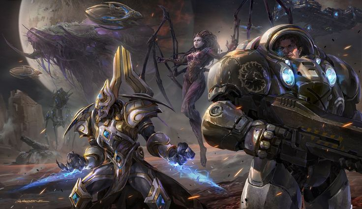

StarCraft II es un videojuego de estrategia en tiempo real desarrollado y publicado por Blizzard Entertainment en el año 2010. Esta obra
maestra de la ciencia ficción se convirtió rápidamente en un ícono del género RTS (Real-Time Strategy), destacándose por su competitivo
multijugador y su narrativa intensa. Su impacto fue tan grande que se consolidó como uno de los pilares del e-sport internacional,
especialmente en Corea del Sur, donde alcanzó niveles de popularidad legendarios.
Trama del juego: Legado del Vacío
La historia de StarCraft II se desarrolla en un universo donde tres razas luchan por la supremacía: los Terran, los Zerg y los Protoss.
La narrativa sigue a Artanis, un líder Protoss, y Jim Raynor, un ex-marine Terran, mientras intentan unir fuerzas para enfrentar a Amon, un antiguo ser que busca
destruir el universo. A lo largo de la campaña, los jugadores experimentan giros inesperados, traiciones y alianzas, mientras descubren los secretos del Vacío,
una dimensión oscura que amenaza con consumir todo a su paso. La historia se desarrolla en tres expansiones: Cada una centrada en una raza diferente y sus luchas por la supervivencia.

Contexto
StarCraft II se desarrolla en un futuro lejano, donde la humanidad ha colonizado varios planetas y se enfrenta a razas alienígenas
con habilidades únicas. La narrativa aborda temas como la traición, la redención y el sacrificio, mientras los personajes luchan
por sus ideales y enfrentan dilemas morales en medio de una guerra intergaláctica.
Jugar
¡Puedes experimentar la épica de StarCraft II gratis en su versión base! Descárgalo desde la página oficial de Blizzard, instálalo en tu dispositivo,
y adéntrate en esta batalla sin cuartel entre tecnología, instinto y misticismo estelar.